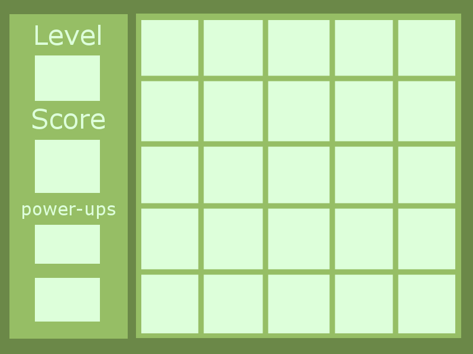
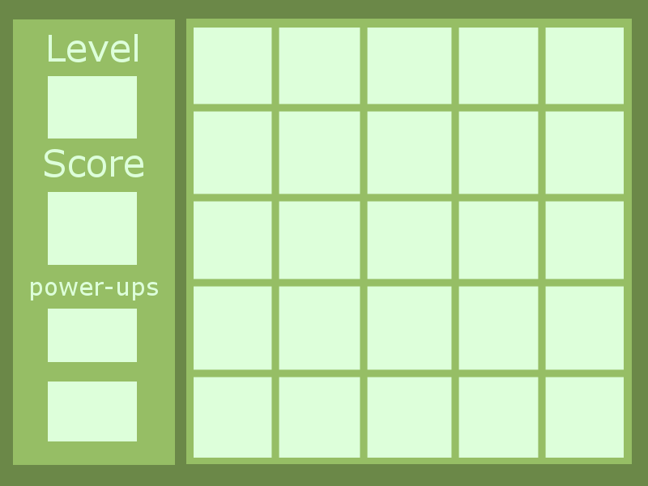

Bubble Popping Blitz
Concept
players must strategically pop all the bubbles on the board within the allotted moves, taking advantage of power ups and chain reactions
Genre
The game falls into the Strategic Puzzle, and Chain Reaction category
Ethestics
- Style - Cartoonish / Simplistic
- The music will be fairly slow to keep the player focused/li>
- Power-Ups and Buttons will have a chime sound when clicked
Gameplay
Mechanics
The screen will be filled with bubbles of various sizes and the player must pop them all within the allotted amount of turns. each bubble popped will release a projectile, if it hits another bubble, the size of it increases or if it's at the max size it too will pop. The main idea is to have the player chain as many bubbles pops together as possible. There will also be power-ups for the player to interact with help with chaining together bubble popping or getting bubbles that are in hard to reach places that would be hard for the player to reach
Control
Players will use the mouse to interact with everything in the game. The bubbles will be popped with a mouse click. Powerups will also be activated with a mouse click. Menus will also be navigated with the mouse
Teaching the Game
On the menu screen, there will be an instructions and controls tab for the player to click to learn to play. the instructions and controls will also pop up before the first level
Player Learning
Instant Pop: immediately pop one bubble - bypass bubble growth stages Extra Moves: based on current level, grants 2-7 extra moves power-ups will spawn at random bubble locations and be granted when the bubble is popped. power-ups will not be required to complete any level but will make completing them easier
Screenshots
 

Other
the game will be heavily based off of this game: http://www.fairyabc.com/.... I don't Currently have any extra Javascript libraries in mind for this project but if it feels necessary I may add one.